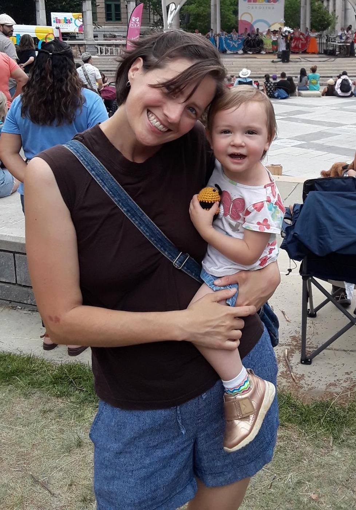

Background
 Download my rèsumèI came to programming after a rewarding but unsustainable career in human services. I have been a direct support professional, case manager, group home manager, classroom assistant, behavior technician, and job coach to neurodivergent individuals across many settings. I aspire to continue serving humans through technology.
In my early career, I studied international economics, business administration and Mandarin Chinese, and worked in local government program management. I am also a returned Peace Corps volunteer (Thailand 2015-17) with a strong interest in world languages, cultures and cuisines.
I love the organizational and problem solving aspects of coding. I am a language and math nerd and prefer to work on the back-end of the tech stack. I also enjoy big-picture structuring of a project, putting the pieces together efficiently, and designing innovative yet minimalist and function-oriented solutions that pertain teaching and learning outcomes.